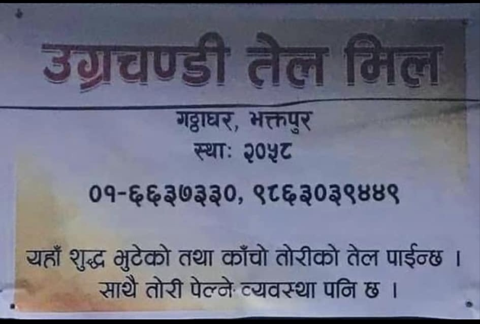
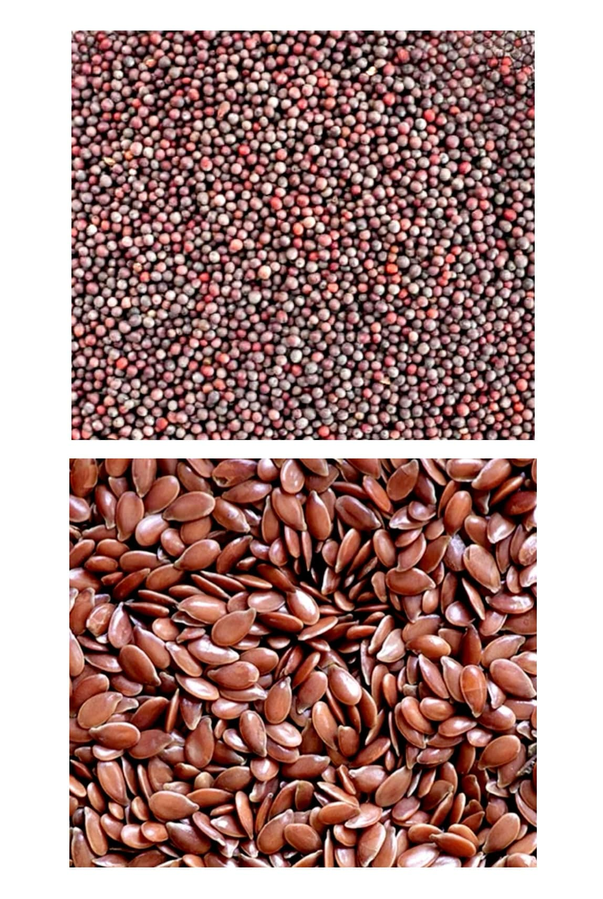
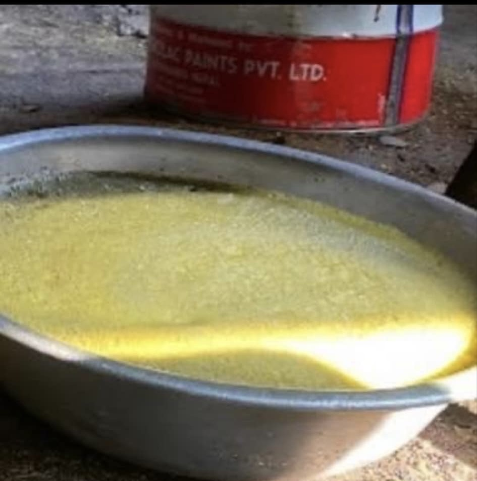

Welcome to ugrachandi oil mill. Ugrachandi oil mill has been a preferred brand of oils for the last 23 years .from filtered oil to refined oils and from kacho oil to Pooja oil, our comprehensive product reigns includes every kind of oil that you may need.
Mustard oil (Tori Ko tel) 1. Cold pressed mustard oil or kacho oils. These Gentler method invoice, pressing the mustard seeds at the machine without the use of chemicals, making it a favorites among health- conscious cooks.
2. Expeller pressed mustard oil or bhuteko tel This method use higher heat with the help of woods and presser to extract more oil from the seeds.
3. Peena When the seats are processed into oil, byproduct is obtained which is called mustard seeds pressed cake, and peena in Nepali.


Cold pressed mustard oil or kacho oil's price is ₹340.Expeller pressed mustard oil or bhuteko tel's price is ₹330.₹ 50 for peena and and rupees55 for powder peena or dhuloo peena.Conclusion .We also supply coconut oil, black and yellow mustard oil ( Tori) and flexseeds oil, etc.